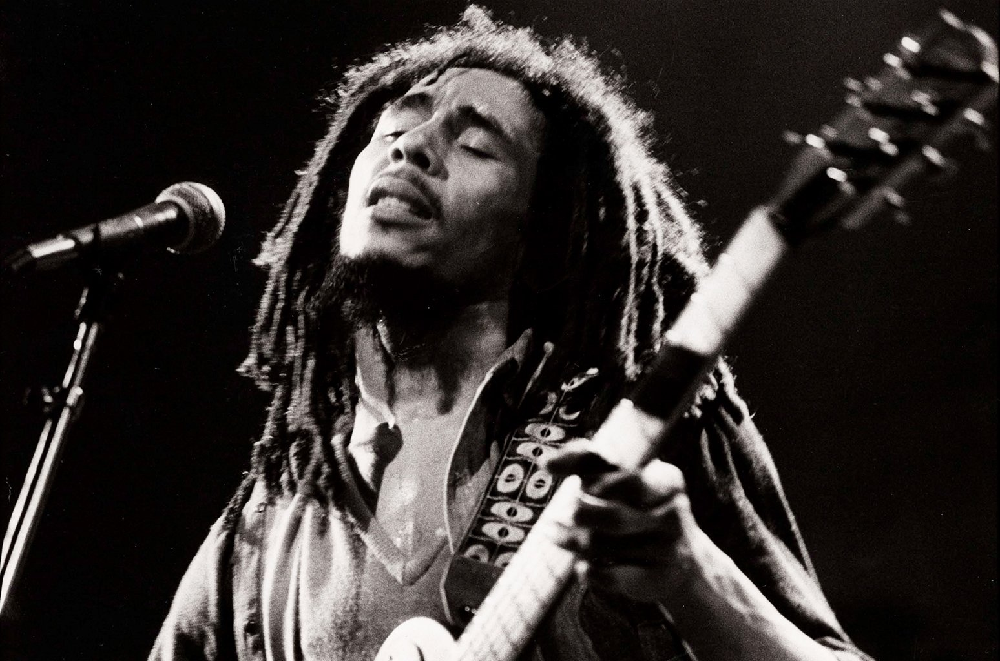

Blues

Riley B. King (September 16, 1925 – May 14, 2015), known professionally as B.B. King, was an American blues singer-songwriter, guitarist, and record producer. He introduced a sophisticated style of soloing based on fluid string bending, shimmering vibrato and staccato picking that influenced many later blues electric guitar players.
More Info
Rock

The Doors were an American rock band formed in Los Angeles in 1965, with vocalist Jim Morrison, keyboardist Ray Manzarek, guitarist Robby Krieger, and drummer John Densmore. They were among the most controversial and influential rock acts of the 1960s
More Info
Reggae

Robert Nesta Marley (6 February 1945 – 11 May 1981)was a Jamaican singer, songwriter, and musician. Considered one of the pioneers of reggae, his musical career was marked by fusing elements of reggae, ska, and rocksteady, as well as his distinctive vocal and songwriting style.
More Info